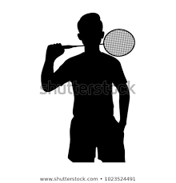
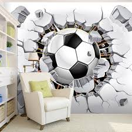

Bulu tangkis atau badminton adalah suatu olahraga raket yang dimainkan oleh dua orang (untuk tunggal) atau dua pasangan (untuk ganda) yang saling berlawanan.
Mirip dengan tenis, bulu tangkis bertujuan memukul bola permainan ("kok" atau "shuttlecock") melewati jaring agar jatuh di bidang permainan lawan yang sudah ditentukan dan berusaha mencegah lawan melakukan hal yang sama.Olah raga yang dimainkan dengan kok dan raket, kemungkinan berkembang di Mesir kuno sekitar 2000 tahun lalu tetapi juga disebut-sebut di India dan Republik Rakyat Tiongkok.
Di Tiongkok, terdapat permainan yang disebut Jianzi, yang melibatkan penggunaan kok tetapi tanpa raket. Alih-alih, koknya dimanipulasi dengan kaki. Objektif permainan ini adalah untuk menjaga kok agar tidak menyentuh tanah selama mungkin tanpa menggunakan tangan.
Sepak bola (bahasa Inggris: Football atau Soccer) adalah cabang olahraga yang menggunakan bola yang umumnya terbuat dari bahan kulit dan dimainkan oleh dua tim yang masing-masing beranggotakan 11 (sebelas) orang pemain inti dan beberapa pemain cadangan. Memasuki abad ke-21, olahraga ini telah dimainkan oleh lebih dari 250 juta orang di 200 negara, yang menjadikannya olahraga paling populer di dunia.[1][2][3][4] Sepak bola bertujuan untuk mencetak gol sebanyak-banyaknya dengan memasukan bola ke gawang lawan. Sepak bola dimainkan dalam lapangan terbuka yang berbentuk persegi panjang, di atas rumput atau rumput sintetis. Secara umum, hanya penjaga gawang saja yang berhak menyentuh bola dengan tangan atau lengan di dalam daerah gawangnya, sedangkan 10 (sepuluh) pemain lainnya diizinkan menggunakan seluruh tubuhnya selain tangan, biasanya dengan kaki untuk menendang, dada untuk mengontrol, dan kepala untuk menyundul bola. Tim yang mencetak gol paling banyak pada akhir pertandingan menjadi pemenangnya. Jika hingga waktu berakhir masih berakhir imbang, maka dapat dilakukan undian, perpanjangan waktu maupun adu penalti, bergantung pada format penyelenggaraan kejuaraan. Dari sebuah pertandingan resmi, 3 poin diberikan kepada tim pemenang, 0 poin untuk tim yang kalah dan masing-masing 1 poin untuk dua tim yang bermain imbang.[5] Meskipun demikian, pemenang sebuah pertandingan sepak bola dapat dibatalkan sewaktu-waktu atas skandal dan tindakan kriminal yang terbukti di kemudian hari. Sebuah laga sepak bola dapat dimenangkan secara otomatis oleh sebuah tim dengan 3-0 apabila tim lawan sengaja mengundurkan diri dari pertandingan (Walk Out).